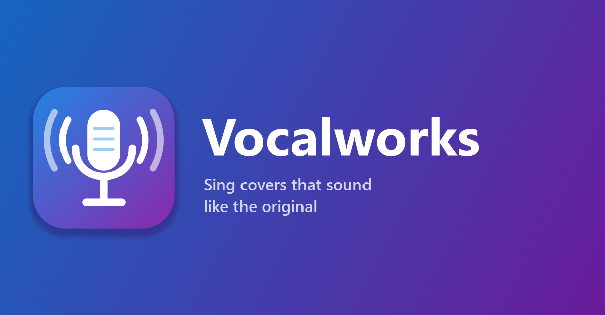

🧠 Selected for the XERJ Corpus HubVocalworks
A Windows app for singing covers. Pick a song, record yourself singing along, and get the song back with your voice in it, processed to sound like the original vocal.
What it does
- Matches the original automatically: pitch correction, tone, compression, room, stereo width, distortion, tape hiss and loudness are measured from the original vocal and applied to yours.
- Records in the app: the song plays in your headphones with a count-in and karaoke-style synced lyrics, with or without the original singer.
- Runs on your own PC: no account needed. Demucs splits vocals from the instrumental locally; everything else is classic signal processing.
- One-click install: an installer sets up Python and the app's libraries, using an NVIDIA GPU when there is one.